マイチューターのTOEIC テスト対策コース【目標スコアー別 500点コース】


TOEIC 目標スコア 500点コース（全50レッスン）
レッスンの主な特徴
基本的な語彙力、文法力の強化が最重要課題です。比較的短いパッセージを正確に聴く、読む力を養います。
＜レッスンコース案内＞
▮初回のみ「講師への連絡」から英字表記をお伝えください。2回目以降は受講歴から順番に進めていきます。
▮TOEIC目標スコア500点コース(英字：TOEIC Target 500 Course)
●最大レッスン数：50レッスン（必要な分だけ受講してください）
●対象レベル：未受験者（英検®3級程度）～ TOEIC 490点
特訓ゼミの構成
- リスニングセクション（25分/レッスン）
Part Name of each Part Lesson 数 Part 1 Photographs 写真描写問題 9 Part 2 Question-Response 応答問題 9 Part 3 Short Conversations 会話問題 6 Part 4 Short Talks 説明文問題 6
- リーディングセクション（25分/レッスン）
Part Name of each Part Lesson 数 Part 5 Incomplete Sentence（短文穴埋め問題) 9 Part 6 Text Completion 長文穴埋め問題 5 Part 7 Reading Completion 読解問題 5
レッスンの詳細
- Part 1 Photographs 写真描写問題
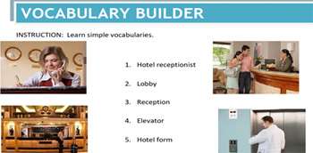 ① よく出題される表現（動作）を学ぶ
② 出題傾向の高い状況・場所でのシーンを学ぶ
（ショッピングモール、オフィス、病院、薬局、メカニカルショップ、建設、ホテル、ホームセンター）
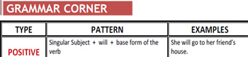 出題される動作、状態を表す基本文法を学ぶ
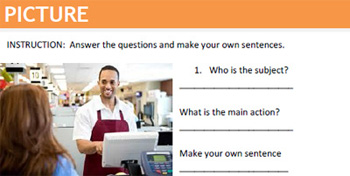 絵を見て瞬間英作文：
絵を見て簡単な質問に答え、絵について作文する。
文法・構文的に正確な英文を作成できるスピードが速くなればなるほどリスニング・リーディングで理解できるスピードも速くなります。
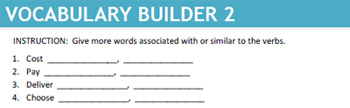 動作を表す語句の言い換えを学ぶ：
1つの動作に対しては、抽象的な言い方、易しい単語の使用や難しい単語の使用があります。
ここでは1つの動作、表現を別の言い方に変える練習をします。
間違えやすい表現：
インストラクターから短いナレーションを聴き、質問に答えます。発音や語句の用法などひっかけ問題に気をつける練習です。
- Part 2 Question-Response 応答問題
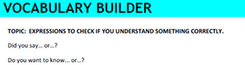 - 疑問詞で始まる疑問文
- 疑問詞で始まらない疑問文
- 選択疑問文
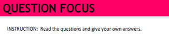 - 疑問詞と回答に使われる副詞を覚える
- 出題傾向の高いカテゴリーの語彙を覚える
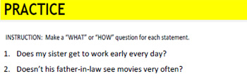 - 質問から回答分を瞬間英作文
- 回答を見て疑問詞を使った瞬間英作文
- Part 3 Short Conversations 会話問題
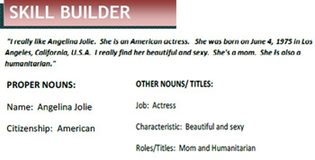 - 頻出会話で使われる語彙力を高める
- 会話の重要な名詞、時間、場所、タイトルなどを記憶する
- 頻出会話シーンを使った音声付き類似問題を解く
- 頻出会話シーンを想定した瞬間英作文
- Part 4 Short Talks 説明文問題
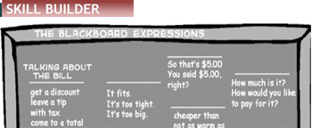 - 頻出説明文問題で使われる語彙力を高める
- 頻出説明文である電話、アナウンスなどのナレーションから話のポイントを掴む
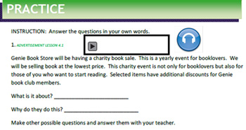 - 頻出ナレーションを使った音声付き類似問題を解く
- 頻出ナレーションを想定した瞬間英作文
- Part 5 Incomplete Sentence 短文穴埋め問題
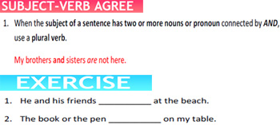 - 文法（初級編）[ 名詞、代名詞、動詞、形容詞、副詞、前置詞、接続詞、他動詞、自動詞、補語、冠詞、助動詞 ]
- 確認練習問題 - 短文穴埋め練習問題他
- 確認練習問題２ - 短文完成問題・瞬間英作文
- 頻出文書の精読、音読
- 頻出文書を使って語彙力を高める
- 短文穴埋め問題での理解度チェック
- 頻出キーワードを使った短い瞬間英作文
- 与えられた課題から頻出文書を瞬間英作文 / 頻出文書の穴埋め問題
- Part 6 Text Completion 長文穴埋め問題
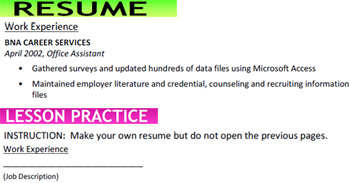 - タイプ別頻出文書で使われる語彙力を高める
- 重要語彙 理解度チェック 穴埋め問題・瞬間英作文
- 頻出文書 精読・音読
- 出題文章から設問に答える
- 重要語彙を使った短い会話
- Part 7 Reading Completion 読解問題
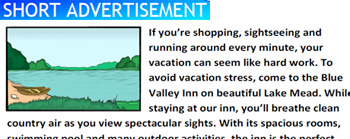 - タイプ別頻出文書で使われる語彙力を高める
- 重要語彙 理解度チェック 穴埋め問題・瞬間英作文
- 頻出文書 精読・音読
- 出題文章から設問に答える
- 重要語彙を使った短い会話